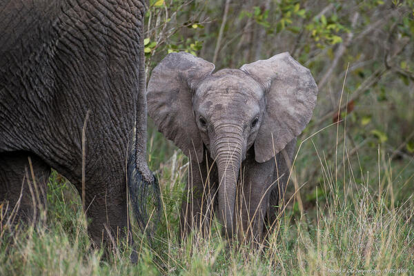
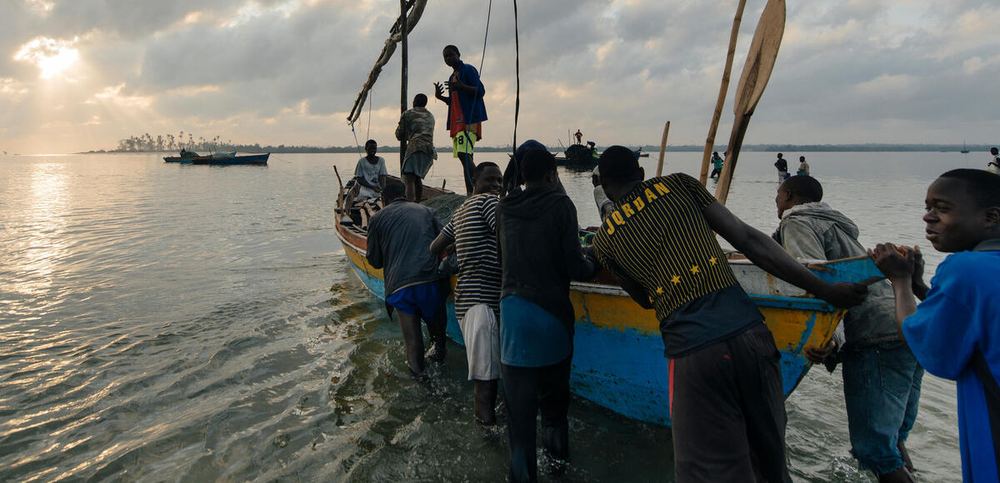

"For a Living Planet"
What is WWF?
WWF was established in 1961 by a group of passionate and committed individuals who sought to secure the funding necessary to protect places and species that were threatened by human development.
Inspired by a series of articles in a UK newspaper written by Sir Julian Huxley about the destruction of habitat and wildlife in East Africa, businessman Victor Stolan pointed out the urgent need for an international organization to raise funds for conservation. The idea was then shared with Max Nicholson, Director General of British government agency Nature Conservancy, who enthusiastically took up the challenge.
Nicholson was motivated in part by the financial difficulties facing the International Union for Conservation of Nature (IUCN), and felt that a new fundraising initiative might help IUCN and other conservation groups carry out their mission. He drafted a plan in April 1961 that served as a basis for WWF’s founding, which was then endorsed by the executive board of IUCN in a document known as the Morges Manifesto.
Nicholson and approximately two dozen other individuals –including Sir Peter Scott, a member of IUCN’s executive board who had signed the Morges Manifesto and later became WWF’s first vice president – hammered out the details of the new organization in a series of meetings over the following months. This included choosing the name World Wildlife Fund and adopting the now-famous panda logo.
The first three “national appeals” (now called national organizations) were also established in 1961 in the United Kingdom, Switzerland, and the United States. Since then, WWF-US has grown to include over 1 million supporters and has helped lead conservation projects in Alaska, the Northern Great Plains, and around the world.
What We Have Done So Far
The World Wide Fund for Nature (WWF) has been actively involved in numerous conservation efforts and initiatives worldwide.
Wildlife Conservation: WWF works to protect endangered species and their habitats. This includes initiatives to combat poaching, habitat destruction, and illegal wildlife trade.
Habitat Conservation: The organization engages in projects to preserve and restore various ecosystems, including forests, oceans, rivers, and wetlands. This involves promoting sustainable land use practices and working with local communities.
Climate Change: WWF is actively involved in climate change mitigation and adaptation efforts. This includes advocating for policies to reduce greenhouse gas emissions, promoting renewable energy, and supporting communities vulnerable to the impacts of climate change.
Sustainable Development: WWF collaborates with governments, businesses, and communities to promote sustainable development practices. This includes initiatives related to responsible forestry, fisheries, and agriculture.
Water Conservation: The organization works to protect and manage freshwater resources. This involves addressing issues such as pollution, over-extraction, and the conservation of critical water habitats.
Corporate Partnerships: WWF engages with businesses to encourage sustainable practices and responsible resource management. This includes partnerships to reduce the environmental impact of supply chains and promote sustainable business practices.
Education and Advocacy: WWF is involved in educational programs to raise awareness about environmental issues. The organization also advocates for policies and legislation that promote conservation and sustainable development.
Global Campaigns: WWF often leads global campaigns to address specific conservation challenges. These campaigns may focus on issues like deforestation, overfishing, or the protection of specific species.

